A.RM.I
ARM과 AI 모델을 활용한 분산형 저전력 온디바이스 객체인식 군용 경계 감시 시스템
Impact & Value
프로젝트 차별점 및 임팩트
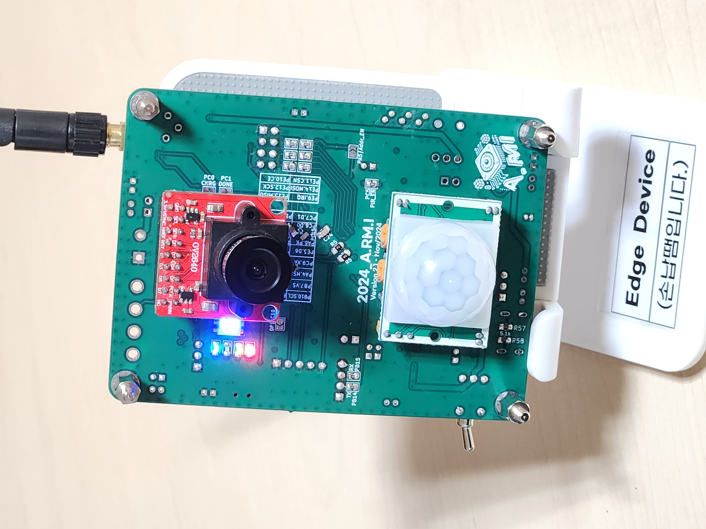
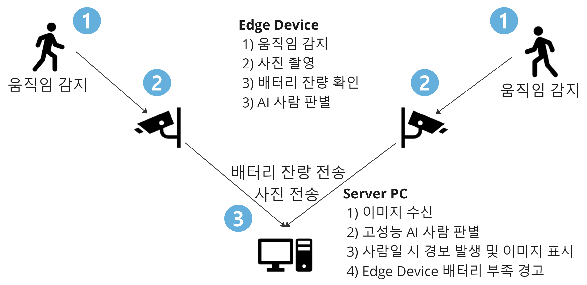
Demo Video
시연 영상
A.RM.I 시스템의 실제 동작 및 객체 인식 시연 과정입니다.
Overview
프로젝트 개요
전력 공급이 어려운 지형적 한계와 병력 부족 문제를 해결하기 위해, 초저전력 엣지 디바이스와 서버를 연동한 분산형 AI 경계 감시 시스템을 제안합니다.
혁신적 감시 체계
기존 24시간 병사 감시 체제를 보조·대체하며, 전력 공급이 어려운 지역에서도 장기간 운용 가능한 저전력 AI 기반 분산형 경계 감시 시스템입니다.
0.02% 초저전력 운영
상시 작동하는 기존 장비(연간 45kWh)와 달리, 이벤트 기반 동작과 대기 전력 차단을 통해 연간 8.43Wh (기존 대비 0.02%) 수준으로 전력 소모를 극단적으로 최소화했습니다.
높은 정확도의 분산형 AI
기존 단일 장비(85%)의 한계를 넘어, Edge(CNN)와 Server(YOLOv4)를 연동한 1:N 아키텍처를 구축해 객체인식 정확도를 95% 이상으로 대폭 향상시켰습니다.
초경량 무선 확장성
무겁고 유선망이 필수적인 기존 장비와 달리 178g의 초경량 디바이스와 무선 RF 통신을 활용하여, 감시 지점의 제약 없이 장비를 무한 증설할 수 있습니다.
초저가 구축 및 자급자족
대당 수백만 원에 달하는 기존 시스템을 대체하여, 대당 약 14만 원의 초저가 제작 비용과 태양광 MPPT 에너지 하베스팅을 통한 무보수 운영을 실현했습니다.
통합 관제 서버
서버 PC에서 다수 Edge 디바이스의 이미지를 수신하고 실시간으로 분석하여, 군사 및 상업 보안 영역의 인력 부족 문제를 효과적으로 해결합니다.
Specifications
시스템 사양
Architecture
시스템 아키텍처
Edge Device와 Server 간의 분산 처리 아키텍처 및 통신 프로토콜
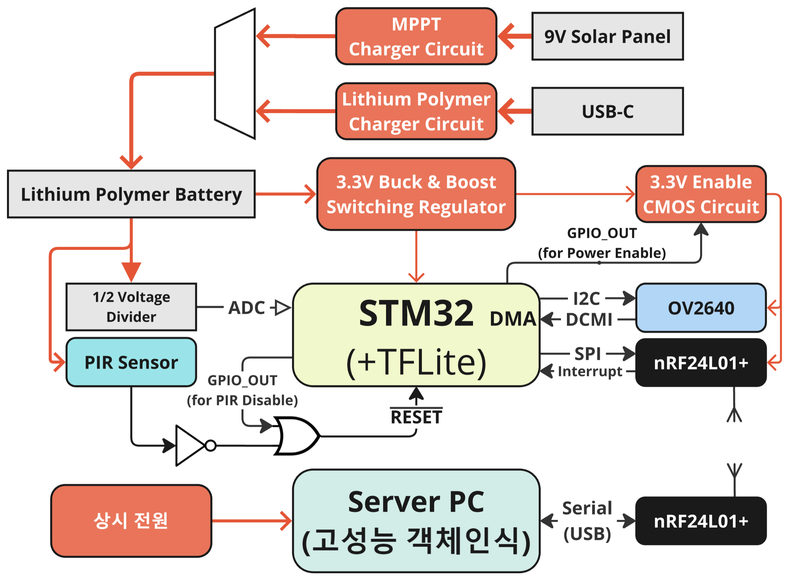
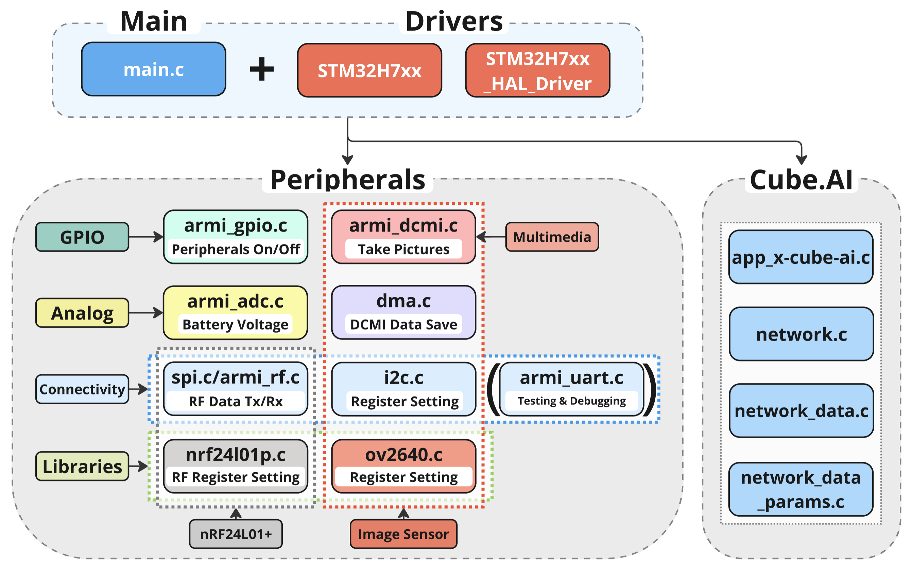
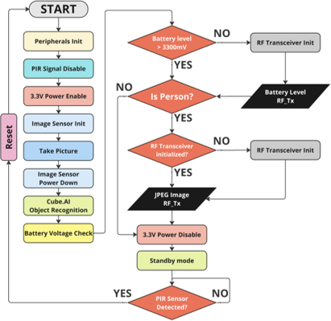
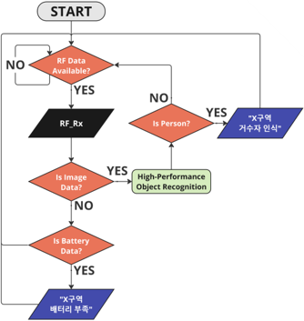
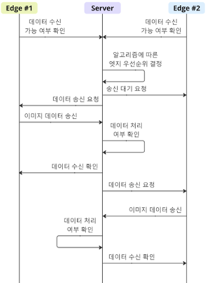
AI Model
온디바이스 CNN 모델 제작
가장 전력을 많이 소모하는 '무선 RF 통신'을 최소화하기 위해, 엣지 디바이스 내부에서 자체적으로 타겟을 선별하는 가벼운 AI 모델을 구축했습니다.
On-Device AI의 핵심 목적
배터리 기반 시스템에서 무선 통신은 전력 소모의 가장 큰 원인(Peak 시 555mW)입니다. 모든 이미지를 무조건 전송하지 않고, 엣지 디바이스 자체 CNN 모델로 사람을 식별한 경우에만 이미지를 송신하도록 설계하여 무의미한 통신 전력 소모를 원천 차단했습니다.
커스텀 데이터셋 구축
기존 오픈 데이터셋은 타겟 환경인 산악 지형과 배경이 달라 인식률이 크게 떨어졌습니다. 이를 해결하고자 실제 산에서 직접 훈련 데이터를 촬영하여 모델에 최적화된 전용 데이터셋을 구축했습니다.
해상도 일치화 (320x240)
고해상도 촬영 후 압축 시 발생하는 이미지 질 저하를 막기 위해, Edge Device의 실제 카메라(OV2640) 입력 해상도인 320×240으로 처음부터 훈련 데이터를 직접 촬영하여 손실을 방지했습니다.
TensorFlow Keras 학습
TensorFlow와 Keras API를 활용하여 CNN 신경망을 설계하였으며, Adam 옵티마이저와 Cross Entropy 손실 함수를 적용하여 하드웨어 제약 조건에 맞는 커스텀 학습을 진행했습니다.
TFLite 양자화 (INT8)
STM32 MCU의 제한된 메모리(Flash, RAM)에 모델을 탑재하기 위해 TensorFlow Lite 형식으로 변환 후, 32비트 부동소수점을 8비트 정수로 양자화(Quantization)하여 모델 용량을 원본의 약 10% 수준으로 대폭 압축했습니다.
Low-Power Design
저전력 설계
실측 전력 소모 데이터 — 0.01Ω 센트 저항 전압 강하 + 전류계 측정

Standby Mode
MCU는 평소 초저전력 Standby 모드로 대기하다가 PIR 센서를 통해 Wake Up 합니다. 이때 무조건 이미지를 보내지 않고, 온디바이스 CNN 모델로 타겟 유무를 먼저 확인하여 통신(가장 큰 전력 소모) 빈도를 최소화합니다. 타겟이 확인된 경우에만 서버로 이미지를 무선 전송한 후 다시 Standby 모드로 복귀합니다.
Hardware
하드웨어 갤러리
PCB 설계부터 3D 프린팅 케이스까지 — 개발 과정의 실물 기록
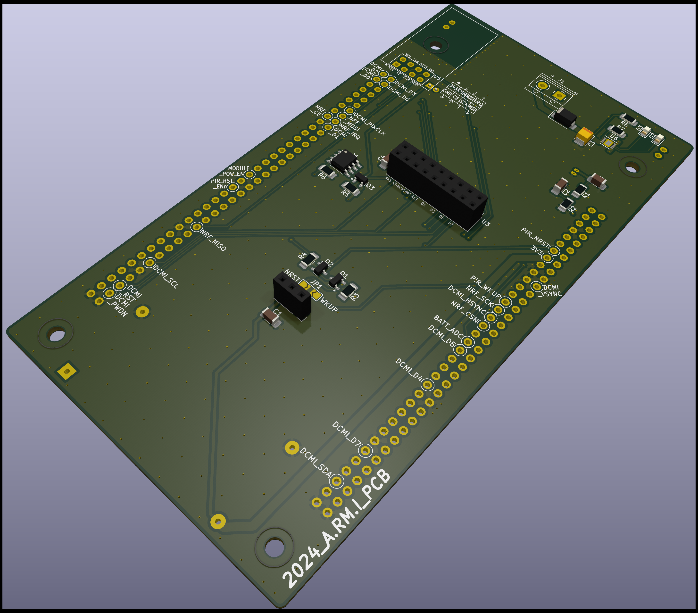
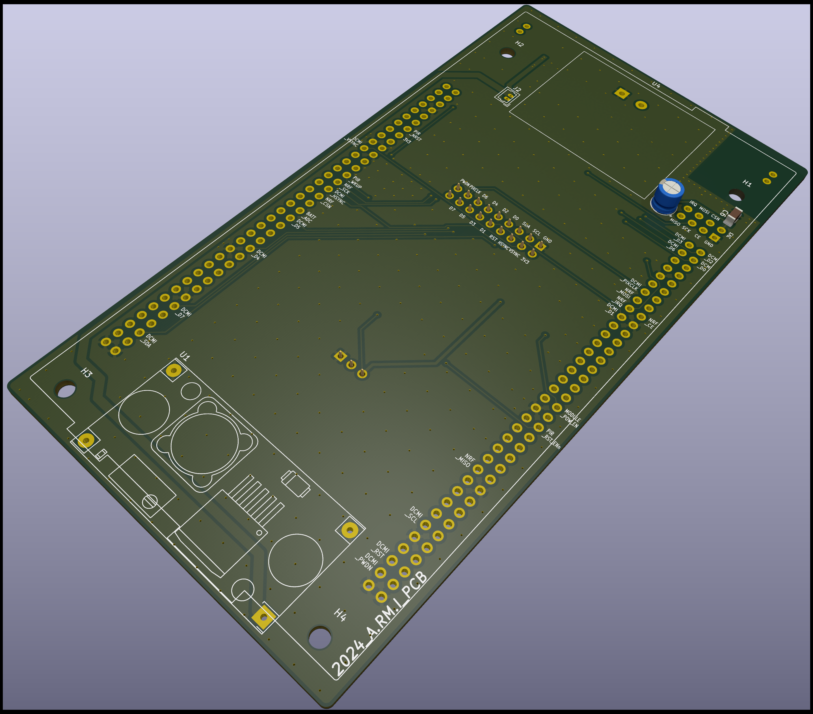
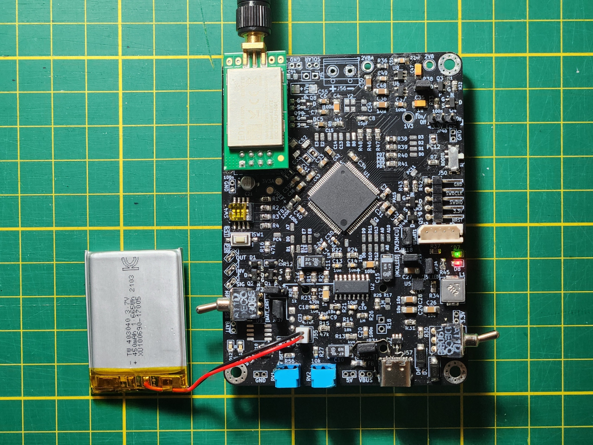


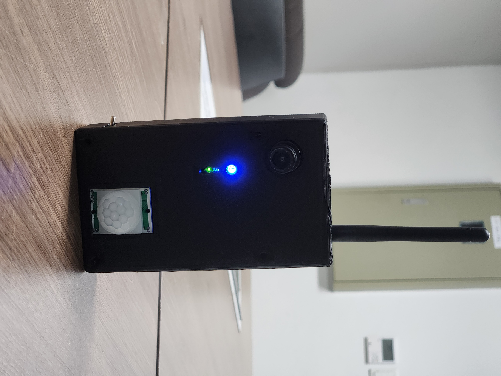
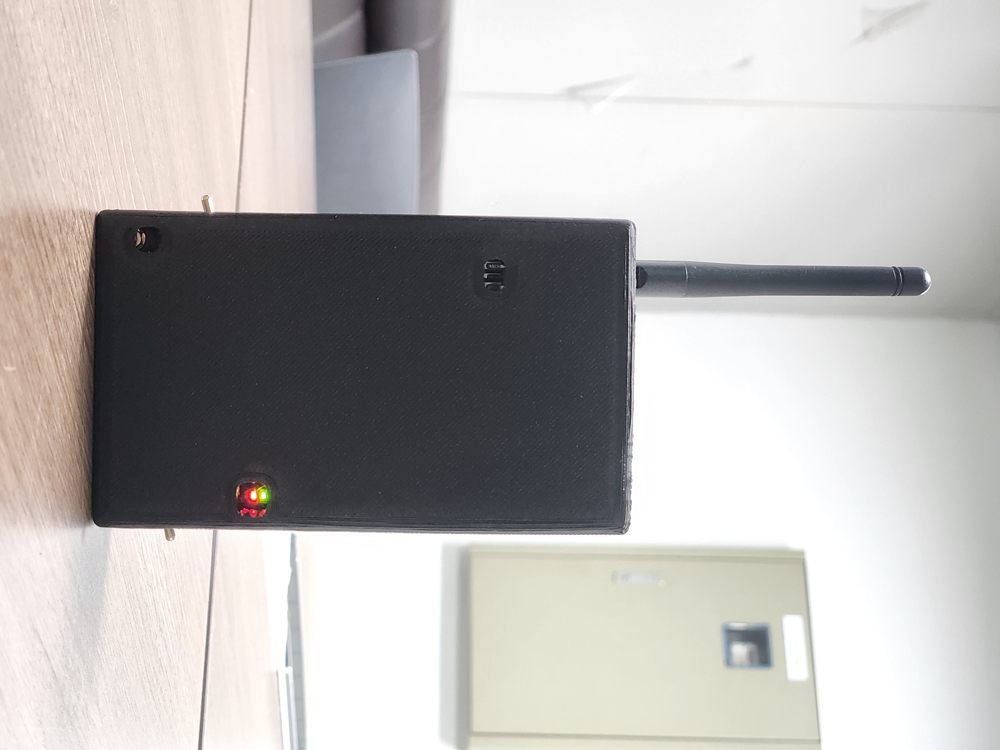
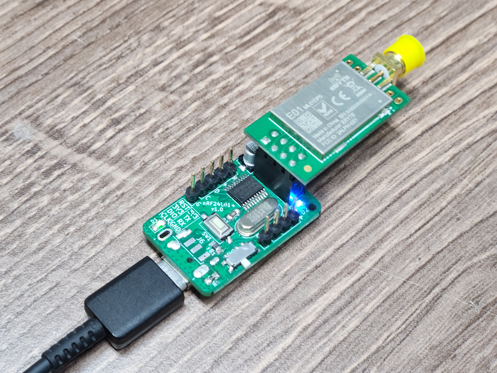
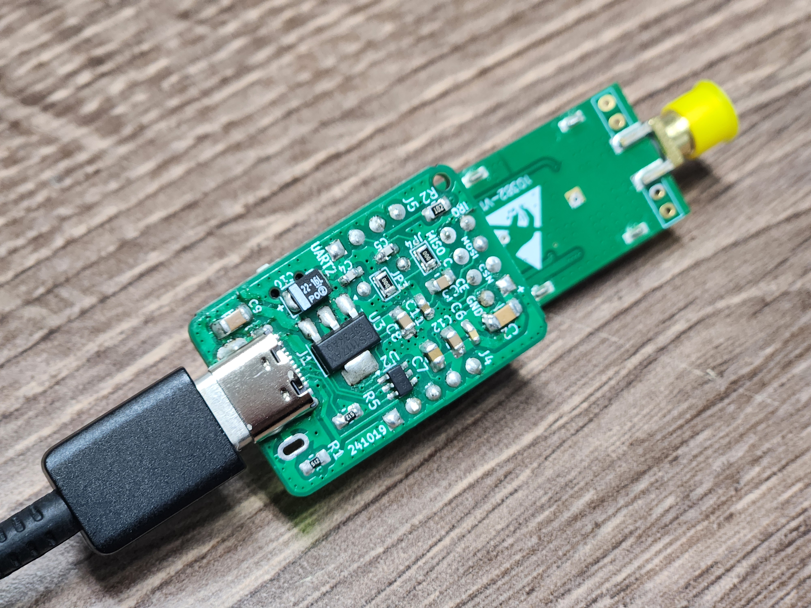
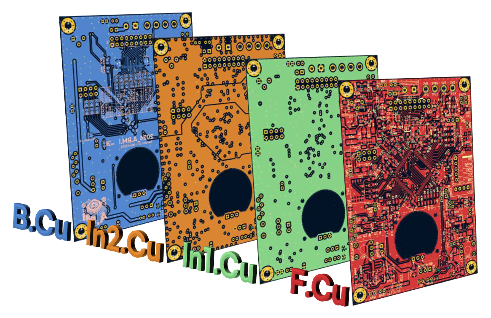
Timeline
개발 타임라인
- ARM Cortex-M 기반 온디바이스 객체인식 아키텍처 설계
- STM32 + Cube.AI CNN 모델 포팅
- PCB v1.0 회로 설계 및 제작
- OV2640 카메라 모듈 인터페이스 개발
- 서버측 YOLOv4 C++ 구현 및 Qt UI 개발
- MCU 실장 및 주변 회로 검증
- RF TX/RX 양방향 ACK 통신 성공
- PCB v2.0.1 설계 — USB VCP, 벅-부스트 레귤레이터
- OV2640, RF 모듈 전원 On/Off 회로 구현
- 배터리 ADC, LED 함수 코딩
- RF 통신 프로토콜 완성 및 안정화
- PCB v2.1 최종 설계 및 Hand Soldering
- MPPT 에너지 하베스팅 회로 통합
- 저전력 Standby/Wake-up 최적화
- 최종 시연 및 논문 작성
Achievements
프로젝트 성과
교내 캡스톤디자인 작품발표회
은상 수상
ICT멘토링 학술대회 (ACK 2023)
최우수상 수상
교내 캡스톤디자인 경진대회 (2022)
대상 수상
한국정보전자통신기술학회 논문 투고
"Low-Power AI Object Recognition Military Surveillance System using ARM and Cube.AI, A.RM.I"
스마트 임베디드 플랫폼 사업단
Education Center for Smart Embedded Platform 지원 프로젝트
GitHub 오픈소스 공개
Edge Device, Server 코드 공개
Team
팀원
지도 교수: 김재민 교수님
역할 분담
소스코드 보기
Edge Device와 Server의 main 코드가 공개되어 있습니다.